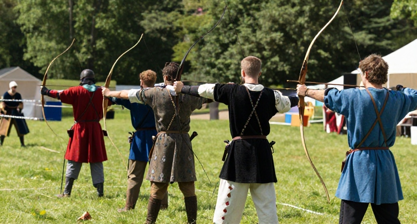

Ne souhaitant pas avoir d'archer incompétant, un capitaine de la garde du seigneur tient un test des talents de ceux voulant choisir l'arc. N'ayant jamais utilisé d'arc court normand dans ta vie tu échoue donc lamentablement. Retourne choisir une autre arme.